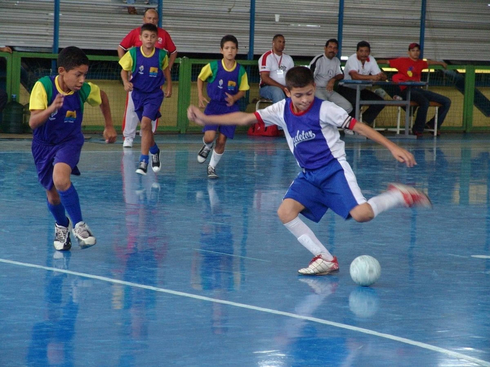

Esportes
Comunidade se junta para reformar a quadra da escola
A comunidade do bairro Acaiaca se juntaram para reformar a escola Escola Estadual Zilda Arns Neumann, nessa terça feira, dia 13 de abril vários moradores se juntaram para pintar a quadra da escola que já estava bastante desgastada. Os moradores aproveitaram que os alunos estavam sem aula, para dar aquela reformada.